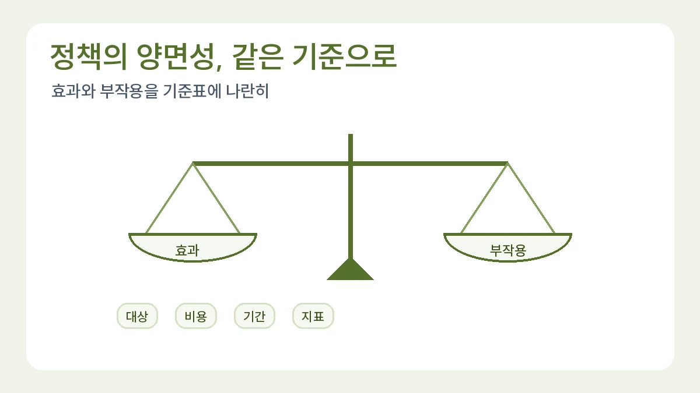

사회 과목 탐구보고서에서 정책의 양면성 다루는 법
사회 과목 보고서는 찬반을 단순히 나누기보다 정책 효과와 부작용을 기준에 따라 비교해야 합니다.
목차
- 정책 이름을 비교 가능한 질문으로 바꾸기
- 이해관계자와 판단 기준을 함께 놓기
- 수치의 변화와 정책 효과를 구분하기
- 반대 근거를 결론을 고치는 조건으로 쓰기
- 실제 정책 자료로 옮길 때 확인할 것
- 사회문제 탐구 보고서 예시: 지역 교통 불평등 분석
- 융합탐구보고서 예시: 수학의 비율로 교통 접근성 계산하기
핵심 요약
- 이해관계자를 구분하기
- 찬반보다 판단 기준을 먼저 세우기
- 반대 관점을 보고서에 포함하기

정책의 양면성을 쓴다는 것은 찬성 의견과 반대 의견을 같은 분량으로 나열한다는 뜻이 아닙니다. 누구의 어떤 문제가 줄고, 그 과정에서 어떤 부담이 생기는지를 같은 기준으로 비교하는 일입니다. 여기서는 실제 시행 정책이나 학생 조사 결과가 아닌 ‘학교 도서관 운영시간 연장’이라는 가상 제안으로 분석 절차를 연습합니다.
1. 정책 이름을 비교 가능한 질문으로 바꾸기
‘도서관 운영시간을 늘려야 할까?’에는 대상과 판단 기준이 빠져 있습니다. ‘방과 후 도서관을 한 시간 더 열면 이용 기회가 늘어나는가, 그에 필요한 운영 부담은 무엇인가?’로 좁혀 보세요. 이용 증가와 운영 부담을 별도로 알아봐야 하므로 하나의 기사나 만족도 수치만으로 결론을 낼 수 없습니다.
먼저 현행 운영시간, 연장하려는 시간, 이용 가능한 학생, 필요한 인력을 적습니다. 실제 학교를 조사한다면 공개된 이용 안내와 학교가 허용한 자료만 사용하세요. 연장 운영이 이미 시행되었는지, 검토 중인 제안인지도 구분합니다. 시행하지 않은 안의 효과를 관측 결과처럼 쓰면 분석의 출발점부터 어긋납니다.
2. 이해관계자와 판단 기준을 함께 놓기
- 학생: 방과 후 이용 기회가 생기는가? 귀가 일정 때문에 이용하기 어려운 집단도 있는가?
- 운영 담당자: 추가 근무와 자료 관리 부담은 어떻게 달라지는가?
- 학교: 기존 공간을 활용하는 대안과 비교했을 때 필요한 자원이 무엇인가?
- 이용하지 않는 학생: 제한된 인력이나 공간 배분이 다른 활동에 영향을 주는가?
각 항목을 ‘확인한 사실 / 예상 영향 / 아직 필요한 자료’로 나눕니다. 예를 들어 ‘이용시간이 한 시간 늘어난다’는 제안 내용이고, ‘모든 학생의 학습량이 늘어난다’는 검증이 필요한 가설입니다. 인터뷰를 했다면 동의한 내용만 익명으로 요약하고, 사람 이름이나 학생별 출입 기록은 보고서에 넣지 마세요. 개인정보를 모으지 않고 운영 안내를 비교하는 방법도 있습니다.
3. 수치의 변화와 정책 효과를 구분하기
계산 연습용으로 이전 주 방문 건수를 80건, 이후 주 방문 건수를 100건이라고 가정합니다. 증가는 20건이고 증가율은 (100−80)÷80×100=25%입니다. 두 값은 실제 통계가 아닙니다. 방문 건수에는 같은 사람의 재방문이 들어갈 수 있으므로 ‘학생 수가 25% 늘었다’로 바꿔 쓰지 않습니다.
실제 비교에서는 시험기간, 행사, 휴일, 개방일 수가 같은지 확인해야 합니다. 이용 건수가 늘어도 시간 연장 때문인지, 시험 준비 때문인지 이 비교만으로 분리하기 어렵습니다. 이전 값이 0이라면 같은 증가율 공식으로 계산할 수 없습니다. 이때는 0건에서 몇 건으로 바뀌었는지 쓰고 비율은 제시하지 않습니다.
이용자가 만족했다는 설문도 응답하지 않은 학생의 생각까지 보여 주지는 않습니다. ‘응답자 중 만족 비율’과 ‘전체 학생의 만족 비율’을 구분하세요. 원자료가 없으면 기사에 나온 숫자를 다시 계산해 정밀한 통계처럼 제시하기보다 자료가 제공하지 않는 범위를 명시합니다.
4. 반대 근거를 결론을 고치는 조건으로 쓰기
초안이 ‘이용 건수가 늘었으므로 연장이 성공했다’라면 이용 접근성 외의 기준이 빠져 있습니다. ‘같은 조건의 이용 변화와 추가 운영 부담을 함께 확인한 뒤 연장 여부를 판단한다’로 수정할 수 있습니다. 이것은 가상 제안의 판단 틀이며 특정 학교에 대한 권고가 아닙니다.
결론 연습: 운영시간 확대는 이용 기회를 넓힐 가능성이 있다. 다만 방문 건수만으로 학습 효과를 확인할 수 없고 추가 운영 부담도 아직 파악하지 못했다. 비교 가능한 기간의 자료와 운영 조건을 확인한 뒤 판단을 보완하겠다.
반대 의견은 형식적으로 한 줄 붙이는 항목이 아닙니다. 어떤 자료가 나오면 판단을 바꿀 것인지 적어 보세요. 이용이 특정 요일에만 몰린다면 모든 요일을 연장하는 안과 필요한 요일만 연장하는 안을 비교할 수 있습니다. 자료가 어느 안도 뒷받침하지 못하면 판단을 유보하는 결론도 가능합니다.
5. 실제 정책 자료로 옮길 때 확인할 것
지역이나 국가 정책을 선택할 때는 발표 기관의 원문에서 대상, 적용 기간, 시행 여부를 먼저 찾습니다. 대한민국 정책브리핑은 공식 발표를 찾는 출발점으로 활용할 수 있습니다. 발표문은 정책 목적을 확인하는 자료이고 효과를 입증하는 평가 결과와는 구분해야 합니다. 이 글은 특정 정책의 시행 현황을 인용하지 않습니다.
출처에는 기관, 문서 제목, 발행일, URL, 실제 열람일과 사용한 표·문단 위치를 적으세요. 제출 전에는 대상이 같은지, 단위가 같은지, 예상과 관측을 섞지 않았는지, 반대 근거가 결론의 조건에 반영됐는지 점검합니다. 질문 선택은 인문사회 주제 예시, 판단 이유를 말로 정리하는 단계는 서류기반면접 질문 준비법으로 이어집니다.
6. 사회문제 탐구 보고서 예시: 지역 교통 불평등 분석
앞의 도서관 연습을 지역 문제에 적용해 봅니다. ‘교통 불평등’은 범위가 넓어 그대로는 답할 수 없습니다. 사회문제 탐구는 누가 어떤 불편을 겪는지, 그 불편이 개인의 선택보다 지역의 조건과 관련되는지를 묻는 데서 시작합니다. 그래서 질문을 ‘우리 시 두 동네의 버스 이용 기회는 인구에 비해 얼마나 다른가?’로 좁힙니다. 아래 동네와 수치는 모두 교육용 가상 사례입니다.
- 이해관계자: 버스로 통학하는 학생, 운전이 어려운 고령자, 노선을 운영하는 업체, 예산을 배분하는 지자체, 세금을 내지만 버스를 거의 타지 않는 주민.
- 판단 기준: 이용 기회(정류장과 배차), 비용(운행 증가에 드는 예산), 효율(늘린 운행을 실제로 얼마나 이용하는가).
- 자료: 국토교통부 전국 버스정류장 위치정보는 정류장번호, 정류장명, 위도, 경도, 정보수집일, 지자체 등을 파일로 제공합니다.[1] 동네별 인구는 행정안전부 주민등록 인구통계에서 같은 기준일로 찾습니다. 배차 간격은 지자체 버스 정보 안내에서 확인하고, 시간대마다 다르면 어느 시간대를 썼는지 적습니다.
정책의 양면성은 대안을 비교할 때 드러납니다. 이용 기회가 적은 동네에 노선을 늘리면 그 동네 주민의 기회는 커지지만, 이용객이 적은 시간대에는 운행당 비용이 커질 수 있습니다. 반대로 이용이 많은 노선에만 예산을 모으면 효율은 좋아 보여도 버스가 꼭 필요한 소수 주민의 불편은 그대로 남습니다. 이 글 4절처럼 ‘어떤 자료가 나오면 판단을 바꿀지’를 적으세요. 예를 들어 늘린 운행의 이용이 계속 적다는 자료가 나오면, 정해진 노선 대신 호출형 운행 같은 다른 방식을 비교 대상으로 넣을 수 있습니다. 이것은 판단 틀의 예이며 특정 지자체에 대한 권고가 아닙니다.
7. 융합탐구보고서 예시: 수학의 비율로 교통 접근성 계산하기
6절의 질문은 사회 과목만으로도 다룰 수 있지만, 이용 기회를 숫자로 정의하는 단계에서 수학이 필요합니다. 융합탐구보고서는 두 과목의 내용을 나란히 붙이는 글이 아니라, 한 과목의 질문에 다른 과목의 도구를 써서 답하는 글입니다. 여기서는 수학이 지표의 정의와 가정을, 사회가 무엇을 불평등으로 볼지에 대한 판단 기준을 맡습니다. 아래 수치는 계산 연습을 위한 가상 자료입니다.
- 동네 A: 인구 12,000명, 정류장 24개, 평균 배차 간격 8분.
- 동네 B: 인구 6,000명, 정류장 6개, 평균 배차 간격 20분.
- 인구 1,000명당 정류장 수: A는 24 ÷ 12,000 × 1,000 = 2.0개, B는 6 ÷ 6,000 × 1,000 = 1.0개입니다. 정류장만 보면 차이는 2배입니다.
- 평균 대기 시간: 승객이 시간표와 상관없이 정류장에 도착하고 버스가 일정한 간격으로 온다고 가정하면 평균 대기 시간은 배차 간격의 절반입니다. A는 4분, B는 10분입니다. 이 가정이 맞지 않으면 값도 달라지므로 가정을 보고서에 그대로 적습니다.
- 인구 1,000명당 시간당 버스 도착 기회: 정류장 수 × (60 ÷ 배차 간격) ÷ 인구 × 1,000으로 정의하면 A는 24 × 7.5 ÷ 12,000 × 1,000 = 15회, B는 6 × 3 ÷ 6,000 × 1,000 = 3회입니다. 배차까지 넣으면 차이는 5배가 됩니다.
어떤 지표를 고르느냐에 따라 같은 두 동네의 차이가 2배도 되고 5배도 됩니다. 그래서 방법 문단에는 지표를 고른 이유를 써야 합니다. ‘정류장 수만으로는 버스가 얼마나 자주 오는지 알 수 없어 배차 간격을 함께 반영했다’처럼 적으면 수학적 선택이 사회적 판단 기준과 연결됩니다.
결론 연습: 가상 자료에서 B 동네의 인구 1,000명당 시간당 버스 도착 기회는 A의 5분의 1이었다. 다만 정류장마다 지나는 노선 수, 정류장까지 걷는 거리, 시간대별 배차 차이를 반영하지 않았으므로 이 값을 이동 불편의 크기로 바로 읽지는 않는다.
다음 단계로 정류장 위경도 자료를 이용해 집에서 가까운 정류장까지의 거리를 계산해 볼 수 있습니다. 이때는 개인 주소 대신 동네 중심점 같은 공개 기준을 씁니다. 변화율로 교통량을 읽는 수학 쪽 예시는 수학 탐구보고서 주제 좁히는 법 9절, 같은 사회문제를 두 학과 관점으로 나눠 보는 예시는 법학과·경찰행정학과 비교 글에 있습니다.
근거: [1] 공공데이터포털 — 국토교통부_전국 버스정류장 위치정보. 확인일 2026-11-13.
제작 안내: 이번 본문은 AI 도구로 재작성했습니다. 수치와 상황은 교육용 가정이며, 실제 정책 평가나 학생의 수행 경험을 대신하지 않습니다.
관련 글
인문사회계열 탐구보고서 주제 예시NEW
인문사회계열은 사람, 제도, 언어, 문화의 관계를 좁은 질문으로 바꾸는 연습이 필요합니다.

서류기반면접 예상 질문 준비법: 답변마다 근거를 붙이는 연습NEW
자신의 활동에서 근거 위치를 찾고 실제 수행·공동 역할·한계를 구분해 질문과 꼬리질문에 답합니다.
이 글은 일반 교육 정보이며 특정 대학 합격·학생부 평가·면접 결과를 보장하지 않습니다. 학교와 대학의 공식 안내를 함께 확인해 주세요.